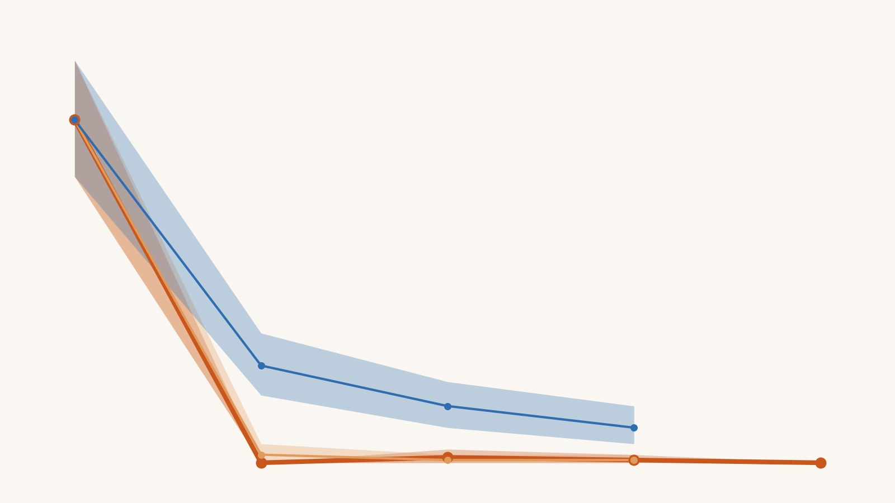
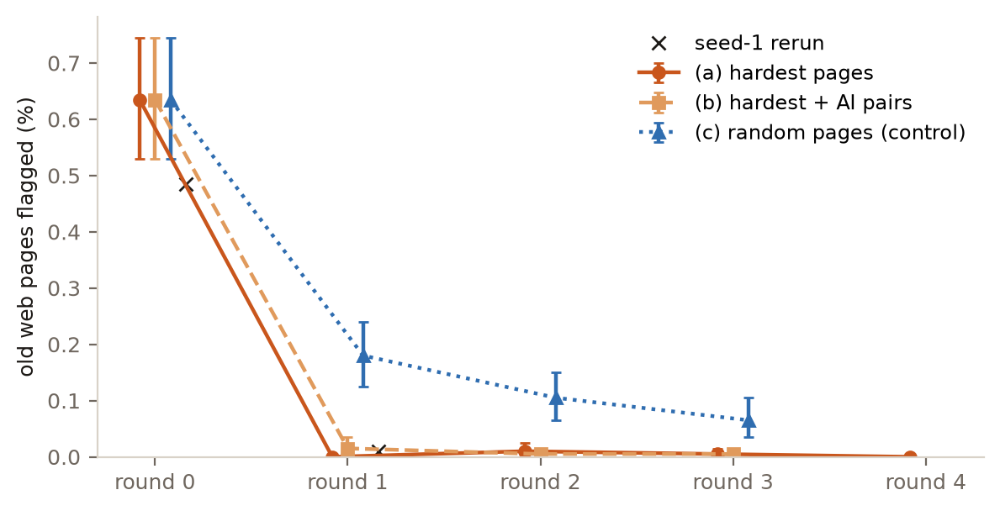
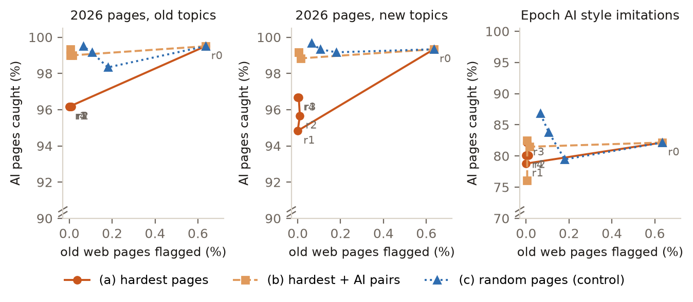
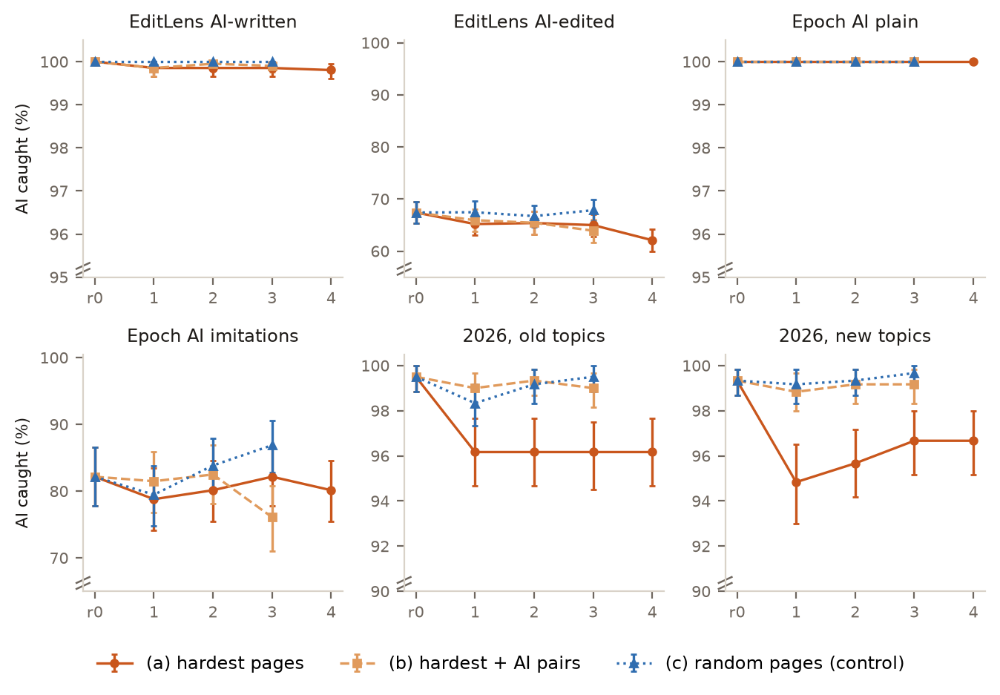
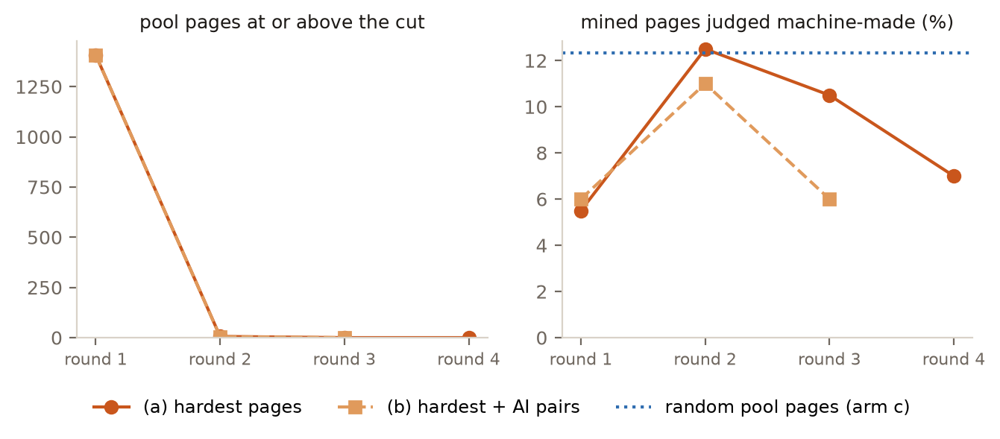
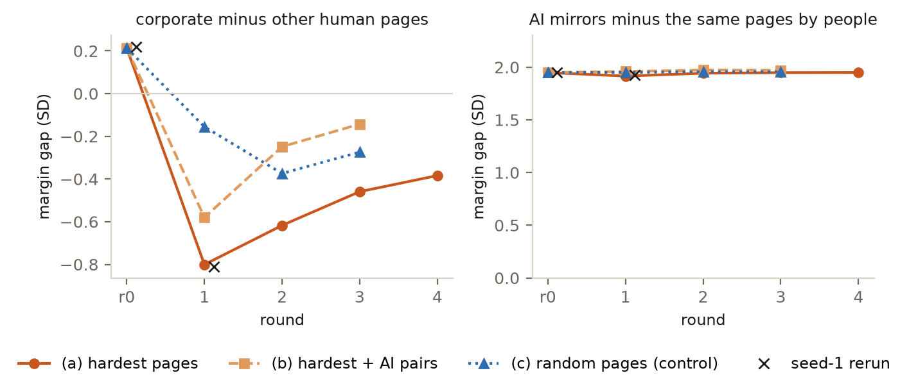

← Research·Experiments·
Can a slop detector fix its own mistakes?
Adding a detector’s own false positives on old web pages back into training removed every one of them in a single round. Alone, that also taught it that polished web copy is human, and it missed more AI text; pairing each page with an AI rewrite kept the fix and the recall.

results/metrics.json. Orange: the hardest pages (dark) and the hardest pages with AI pairs (light); blue: random pages. Figure 1 is the labelled version.Summary: the short answer and the key results
In short
Can a slop detector fix its own mistakes on old web text?
Yes, in one round, at a price you can avoid. Retraining our slop detector with the 2,000 pre-2022 web pages it scored most AI-like, labelled human, took its false positives on 20,000 held-out old web pages from 127 to 0, and on Enron emails from 10 to 0. On its own that cost 3 to 5 points of recall on pages written by four 2026 open models; adding an AI rewrite of each mined page, labelled AI, kept the false-positive gain and nearly all the recall. Hard pages beat the same number of random ones (36 false positives left), and more rounds had nothing left to mine: after round 1 the detector flagged 6 of 250,000 pool pages. Inside, the rounds flipped how the detector reads polished corporate prose (from slightly AI-leaning to clearly human-leaning) and left its AI-versus-human separation untouched. The label is a crawl date fixed from outside, so this is self-training, not self-improvement.
Key results
| What we tested | Result | Compared with |
|---|---|---|
| One round of the 2,000 hardest old pages, labelled human (arm a) | 0 of 20,000 held-out old web pages flagged (seed rerun: 2); Enron 0 of 1,992 | Round 0: 127 (0.64% [0.53, 0.74]); Enron 10 |
| What that cost | Recall on 2026 open-model pages −3.3 [−4.8, −1.8] (old topics) and −4.5 [−6.3, −2.8] points (new topics); AI-edited EditLens text −2.2 [−3.3, −1.1] | Round 0: 99.5% and 99.3% |
| Same pages plus an AI rewrite of each, labelled AI (arm b) | 3 of 20,000 flagged; recall −0.5 [−1.3, +0.2] and −0.5 [−1.5, +0.5]: +2.8 [+1.5, +4.3] and +4.0 [+2.3, +5.7] points over arm a | Arm a, round 1 |
| Is it the hard pages? 2,000 random old pages (arm c) | 36 of 20,000 flagged after one round (hard pages: 0; difference 0.18 points [0.12, 0.24]); random pages catch up by round 3 (13 against 1) and raise Enron false positives to 15 | Arm a, same rounds |
| Do more rounds help or hurt? | After round 1 the pool had 6 pages left above the cut, then none. Web false positives stay at 0 to 2 through round 4; 2026 recall holds, but AI-edited text loses 5.3 points [4.2, 6.6] by round 4 | Rounds 1 to 4 |
| Does mining feed spam back in? (exploratory judge) | Round 1’s mined pages were judged machine-made less often than random old pages (5.5% against 12%); later rounds at the random level. A blind reference check agrees with the judge on 113 of 120 pages | Random pool pages |
| What changed inside | Corporate-copy pages moved from +0.21 to −0.80 standard deviations of the head’s margin (toward “human”), while AI and human pages on the same topics stayed 1.92 to 1.97 apart in every run | Round 0; random pages −0.16 |
| Predictions | 3 hit, 3 missed, 1 not scored (its judge failed a pre-set bar); Section 06 | Seven, written before any run |
01Introduction
Give an AI-text detector a page of web copy from 2019, the kind that sells tyre alignment or announces a company’s new subsidiary, and now and then it says “AI”. It cannot be right: the page was crawled three years before ChatGPT existed. A detector that makes this mistake on old pages makes it on people who write the same way today, and they are the ones who get accused.
What is known. A write-up of a small open AI-text detector (source) reported this error rate on pre-2022 web text as 0.22%, mostly polished corporate writing, and cut it to 0.03% with one round of hard-negative mining: score a large pile of old pages, take the human pages the detector calls AI, add them back as human training data, retrain. Pangram’s production detector also mines hard negatives (Pangram at GenAI Detection Task 3). Our slop-detector note hit the same weakness from the other side: a flag cut fitted on our own human texts flagged 1% of them and 3% of human magazine articles.
What is missing. The published result is one round, one number and no control. Three boring explanations fit it. Any extra human data might lower false positives, not only the hardest pages. The detector might learn that old topics or a corporate register mean “human”, which a 2026 model writing about the same topics could exploit. And old web text is not all human: mining its most AI-looking pages could feed machine-made spam back in labelled “human”. Nobody has shown what happens over several rounds, or what changes inside the detector.
If a slop detector adds the old web pages it scores as most AI-like back into its training as human, round after round, how far do its false positives fall, what does it pay in missed AI text, and is it the hard pages that help?
What this note does. It runs that loop for up to four rounds on the slop-detector note’s detector, beside two controls, and scores every round on held-out sets the loop never touched. Its contributions:
- A per-round measurement of the trade: false positives on held-out old web pages, magazine articles and emails against recall on EditLens, Epoch AI’s style imitations and pages from four 2026 open models, with paired intervals.
- Two controls the published version lacks: the same number of random old pages, and the hard pages paired with AI rewrites of the same content.
- The loop’s dynamics: how many pages are still above the cut each round, how much of what it mines looks machine-made, and how far each round moves the scores.
- A look inside: which directions in the detector’s final state its decision leans on, per round, tested by ablation against random directions.
This is not recursive self-improvement. The detector never labels its own data and never changes how it is trained. The label rule, “crawled before November 2022 means human”, is fixed and comes from outside; the loop only chooses which old pages to show it. That makes it self-training with an external label, the same family as hard-negative mining in spam filters and face recognition.
Success, fixed in a plan written before any run: (1) every number comes from sets the loop never mined or tuned on, split by website so no site appears on both sides; (2) the cut that turns a score into a flag is fixed at round 0 for every round and arm; (3) “fewer” or “more” is claimed only when a paired 95% interval excludes zero; (4) each effect is read against the random-pages control.
02Setup
2.1 The detector and what “flagged” means
The detector is the slop-detector note’s Qwen3-1.7B-Base with a LoRA adapter (rank 16) and a 4-way head: human, lighter AI edit, heavier AI edit, AI-generated. Its score is the expected bucket divided by 3, from 0 (human) to 1 (AI-generated). It reads the first 512 tokens. We use the 1.7B rather than the note’s published 9B because every round retrains every arm from the base model: about 65 H100-minutes for the 1.7B against 4.5 A100-hours for the 9B. On EditLens validation the 1.7B scored 0.899 macro-F1 against the 9B’s 0.909.
A text is flagged when its score is at or above 0.3986, the score that flags 1% of round 0’s validation humans (2,414 short comments, reviews, abstracts and posts). The cut is fixed at round 0 and used for every round and arm, as a deployed detector would keep its threshold. A false positive is a flagged human text; recall is the share of AI texts flagged. Each round’s own refitted cut is reported beside it, and AUROC, which needs no cut.
2.2 The loop and the three arms
The labels come from dates. FineWeb, a cleaned Common Crawl, stamps every page with its crawl date; a page crawled before ChatGPT’s release in November 2022 was, with few exceptions, written without a chat model. We sampled one shard from each of eight crawls between January 2017 and October 2022 (every page dated 2017-01-16 to 2022-10-07), kept pages of at least 80 words, removed duplicates, and split them by website: a hash of each page’s host sends it to the mining pool (250,000 pages), the held-out evaluation set (20,000 pages) or a development set used for the interp concepts and the pilot. No website appears in two of them.
Each round, an arm adds K = 2,000 pages to the detector’s training data and retrains it from the base model with the original recipe, unchanged (data v2b’s 79,120 rows plus everything added so far; learning rate 2e-4, batch 64, 3.79 epochs, seed 0). Added pages carry the human weight the recipe already gives its human rows.
| Arm | Added each round | Rounds | What it tests |
|---|---|---|---|
| (a) hard | the 2,000 pool pages the previous round’s detector scores highest, labelled human | 4 | the method |
| (b) hard + pairs | its own 2,000 hardest pages as human, plus an AI “mirror” of each, labelled AI-generated | 3 | does it learn “old topic means human”? |
| (c) random | 2,000 random pool pages, labelled human | 3 | is it the hard pages, or just more human data? |
A mirror keeps the topic and drops the words: an open model first writes a two-line summary and keywords of the human page, then a fresh call writes a new page from the summary alone, the slop-detector note’s own recipe for fully AI-written text, with its open-weight generator mix. Round 0 is the published adapter itself; a second copy trained with seed 1, and a seed-1 copy of arm (a)’s first round, give the seed spread.
2.3 Evaluation sets
| Set | Human | AI | Used for |
|---|---|---|---|
| Held-out old web (FineWeb, other websites) | 20,000 | – | the headline false-positive rate |
| Magazine articles (EditLens Human Detectors) | 150 | 150 | false positives off the web; recall |
| Enron emails (EditLens) | 1,992 | 4,155 | false positives off the web; recall on AI-written emails |
| Epoch AI detector test | 495 | 594 | false positives; recall on 297 plain and 297 style-imitation passages |
| EditLens test | 2,038 | 4,077 | recall on AI-written (2,046) and AI-edited (2,031) text; AUROC |
| 2026 pages, old topics | – | 600 | mirrors of held-out-website pages from before 2022, by DeepSeek-V4.1-Flash, MiniMax-M3.1-Flash, GLM-5.3-Flash and Nemotron-3.5-Lightning (150 each) |
| 2026 pages, new topics | – | 600 | the same four models and recipe, seeded from pages crawled in 2025 |
None of the four 2026 models wrote any training text. The old-topic and new-topic sets differ only in where their topics came from, so a detector that learned “2019 topics are human” would miss more of the first.
03How the study was run
- Plan. Arms, K, rounds, the fixed cut, every evaluation set and seven predictions were written and committed before any run.
- Pools. 8 FineWeb shards sampled on a CPU container; dates checked (none after 2022-10-07); website overlap between pools checked (zero).
- Pilot on the development set only: round 0 flagged 125 of 20,000 development pages (0.63%), so 2,000 pages a round covers every page above the cut in the first round; a 4,000-row training run checked the launcher, scoring and the feature readout.
- Judge check. The open judge that labels mined pages as machine-made or not was scored on 300 pages of known origin before use (Section 4.5). It missed one of its two pre-set bars, so its labels are reported as exploratory, with a blind reference labelling beside them.
- Round 0: the published adapter scored every evaluation set and the 250,000-page pool.
- Rounds: each round mined with the previous round’s detector, (b) wrote its mirrors, and the arm retrained and scored every evaluation set once: 10 trainings plus 2 seed reruns.
- Inside: for every round, the state the head reads was saved for 1,600 development pages (Section 4.6).
- Analysis from saved scores only; predictions scored mechanically.
| Fixed before any run | Changed later, and when |
|---|---|
| Detector, recipe, K, rounds, arms, the cut, evaluation sets, website split, predictions, the judge’s pass bar | After the pilot: the judge’s labels became exploratory (it failed its bar; the one allowed swap did worse); generation moved from one open-model provider to another, same models; the page-writing prompt asks for plain text (one generator wrote HTML); the readout check’s tolerance was set from bf16 precision. After reading round 1, as description only: the margin readout inside the detector (Section 4.6), the recalibration baseline fitted on held-out web (Section 4.3), and the profile of round 0’s false positives and flag rate per crawl (Section 4.5). |
Conditions: bf16 training and scoring on one H100 per run, first 512 tokens, about 65 minutes per training; generation at temperature 0.8 and the judge at 0.
04Results
4.1 One round of hard pages removes every false positive on held-out old web

Figure 1 shows the headline. Round 0 flags 127 of 20,000 held-out old web pages (0.64% [0.53, 0.74]). One round of adding its 2,000 highest-scored pool pages as human takes that to 0 of 20,000; the seed-1 rerun of the same round flags 2. The paired version (b) flags 3. Every later round of either mining arm stays at 0 to 2 pages. The same round also clears Enron: 10 of 1,992 human emails flagged at round 0, none after round 1, a domain the loop never saw.
Two human sets did not move. Magazine articles stay at 7 to 12 flagged of 150 in every run, and Epoch AI’s human passages at 3 to 10 of 495; with sets this small, a change of a few texts is inside the interval, so these say “no detectable change”, not “no change”. Pooled, the off-web humans fell by about half (30 to 16 of 2,637) while web pages fell by all of it, the domain gap the plan predicted.
4.2 The price is 3 to 5 points of recall on new AI text, and pairing each page with an AI rewrite removes it

The false positives did not come free (Figure 2). Arm (a)’s first round caught fewer pages from the four 2026 models: 96.2% of old-topic pages against 99.5% at round 0 (−3.3 points [−4.8, −1.8]) and 94.8% of new-topic pages against 99.3% (−4.5 [−6.3, −2.8]). It also caught fewer AI-edited EditLens texts (−2.2 [−3.3, −1.1]). Its seed-1 rerun paid the same (95.3% and 95.5%). This is a loss of ranking, not only of calibration: the chance that a 2026 page outscores a random old human page fell from 0.9999 to 0.993 (AUROC), and refitting the cut on our validation humans gives the same recall.
Arm (b), which adds an AI mirror of every mined page as AI, kept almost all of it: 99.0% and 98.8% after round 1 (differences from round 0 of −0.5 [−1.3, +0.2] and −0.5 [−1.5, +0.5]), with the same false-positive drop. Against arm (a) at round 1 that is +2.8 [+1.5, +4.3] and +4.0 [+2.3, +5.7] points of recall at no detectable cost in false positives. It kept that through three rounds (99.0% and 99.2% at round 3, with 1 of 20,000 web pages flagged), though its third round lost ground elsewhere (Section 4.4).
The plan’s worry was a topic shortcut, “old topics mean human”. The data say otherwise: arm (a) lost more on 2026 pages about new topics (−4.5) than on pages about old ones (−3.3). What it learned looks like a register, “reads like a web page means human”, and every 2026 page here was written to read like one. The paired AI mirrors are written the same way, which is why they cancel it.

4.3 Hard pages beat random pages, most clearly in the first round
Arm (c) adds the same number of random old pages. After one round it flags 36 of 20,000 web pages against arm (a)’s 0 (difference 0.18 points [0.12, 0.24]): 2,000 random pages did 72% of what 2,000 hard pages did. More random pages keep helping, 21 after round 2 and 13 after round 3, so by round 3 random pages had removed 0.57 of the 0.64 points; hard pages still flag fewer (difference 0.06 [0.03, 0.10]). Random pages also cost something different: they lowered recall less on 2026 pages, but raised false positives on Enron emails, from 10 to 15 of 1,992 by round 3, where the mining arms flagged at most 2.
A cheaper fix than retraining is to move the cut. To flag only 2 of the 20,000 held-out web pages, as the retrained detectors do, round 0 needs a cut of 0.865; there it catches 83% of 2026 pages on either topic set and 72% of Epoch AI’s imitations, against 95% to 99% of 2026 pages for the retrained detectors. (This baseline is fitted on the held-out set itself, so it flatters recalibration.) Retraining moved the ranking; no cut on round 0 can.
4.4 After the first round there is nothing left to mine

Round 0 put 1,407 of the 250,000 pool pages above the cut, so the first round’s 2,000 pages held all of them. The round-1 detectors flag 6 (a) and 5 (b); the round-2 detectors flag none. From round 2 on, “the 2,000 hardest pages” are pages the detector already calls human, scoring at most 0.76, then 0.35. More rounds stopped helping because there was nothing left to fix (Figure 1): arm (a)’s rounds 2 to 4 flagged 2, 1 and 0 web pages, inside the round-1 seed spread (0 and 2).
Recall on the 2026 pages did not keep falling: arm (a) caught 94.8%, 95.7%, 96.7% and 96.7% of new-topic pages over rounds 1 to 4, and 96.2% of old-topic pages each round. The first round also moved the scores the most: their rank order on held-out web pages correlates with round 0’s at −0.15 (the pages it called most AI became the most human), against 0.45 to 0.67 between later rounds of the mining arms and 0.64 to 0.71 for random pages.
Where more rounds did start to hurt is lightly AI-edited text. Each round adds 2,000 pages the detector already calls human, and both mining arms slowly stopped catching texts a model only touched up: arm (a) caught 67.4% of EditLens’s AI-edited texts at round 0, 65.2% after round 1 and 62.1% after round 4 (−5.3 points [−6.6, −4.2]; −2.9 [−3.9, −1.9] from round 3 to 4), and the paired arm 63.9% after round 3 (−3.5 [−4.6, −2.4]). The paired arm’s third round also caught fewer of Epoch AI’s style imitations (76.1%, −6.1 [−9.1, −3.4]), though that set moved 5 points between two seeds of one round. Random pages, which add no hard pages, left AI-edited recall where it was (67.8% at round 3). Stopping after round 1 would have kept nearly all of the gain and little of this cost.
The loop did not concentrate machine-made text either. The judge (exploratory) calls 5.5% of arm (a)’s first mined set machine-made, against 12% of random pool pages; later rounds sit at or below the random level (12.5%, 10.5%, 7.0%). The worry was that the pages an AI detector finds most AI-like in old web text would be early machine text; for this detector the first ones were, if anything, less often machine-made than average.
4.5 How much of old web text is not human
The judge (gemma-4-31b-it, one yes/no question per page) was checked first on 300 pages of known origin. It called 71 of 100 GPT-2 XL samples and 35 of 50 synonym-spun pages machine-made, and 4 of 75 WebText pages and 13 of 75 development web pages too: balanced accuracy 0.80, passing its bar, but 11.3% “yes” on the human-labelled pages, above the 10% bar. The one allowed swap (qwen3-235b) did worse (0.64, 18%), so its shares are exploratory. Part of the miss is the bar’s own assumption: the development pages are old web pages, not known humans. On the mined pages themselves, a blind reference labelling of 60 mined and 60 random pool pages (shuffled, source and judge hidden) agreed with the judge on 113 of 120 and found 6 of the 60 mined pages and 8 of the 60 random ones machine-made.
What round 0 flagged on held-out web was not mostly corporate copy. The judge’s corporate-register label (49 of 60 agreement with a second blind reference labelling) applies to 34% of the 127 false positives against 26% of random held-out pages, a mild excess; and only 7% of them look machine-made, against 12.5% of random pages.
4.6 Inside: the rounds flip the detector’s view of corporate prose and leave its slop signal alone

We read the state the head reads, the last token of the last layer, on two concept sets the loop never trained on: 400 development pages a judge called polished corporate or marketing copy against 400 it did not, and 400 development pages against an AI mirror of each. To compare rounds whose scores sit on different scales, we measure everything in the head’s margin (generated logit minus human logit) divided by its spread; this readout was added after round 1 (below), and the registered ones are reported beside it.
At round 0, corporate pages sit 0.21 standard deviations nearer “AI” than other human pages. One round of hard pages flips that to −0.80: corporate prose is now read as more human than other human writing (Figure 6, left), and the seed-1 rerun lands at −0.81. Later rounds pull it back toward zero (−0.62, −0.46, −0.38), as do the paired arm (−0.58, −0.25) and random pages (−0.16 to −0.37). Meanwhile the AI-versus-human separation on topic-matched pairs does not move: 1.95 at round 0, 1.92 to 1.97 in every run (right). A linear probe still reads both concepts from the state (corporate 0.88 to 0.92 AUROC, against 0.63 for page length alone; slop 1.00), so nothing was erased; what changed is how the head weighs corporate register. Removing the corporate direction at the head’s input moved corporate pages’ margin by −0.36 standard deviations in round 1, at the edge of 20 random directions’ range (−0.30 to +0.02), against +0.10 at round 0 (random −0.06 to +0.11).
The registered readouts did not survive the rounds. They measured reliance as a drop in mean score (corporate) and in recall at the fixed cut (slop) when a direction is removed. After round 1 nearly every human page scores close to 0, so a drop in mean score cannot show; and removing the slop direction moved recall by 0.06 at round 0 but by 0.24 to 0.64 later, together with the random directions’ range, because the AI pages now sit nearer the cut. These readouts measure distance to the cut more than reliance, which is why the margin readout was added.
05Implications for AI safety
AI-text detectors are used to accuse people: of cheating, of faking reviews, of not writing their own applications. The cost of a false positive falls on a person, so a method that removes them matters. This one works, and cheaply: one round of the detector’s own mistakes on old text, about an hour of one GPU, took held-out false positives from 127 in 20,000 to none. But it moved the detector’s boundary, not just its threshold, and a detector that has learned “polished web copy is human” misses more of the AI text that is written as polished web copy, which is most of what a content farm in 2026 produces. The paired AI rewrites closed that gap here; without them, the false-positive number alone would have reported a clean win while the detector got easier to evade.
The loop is also a small, safe instance of a pattern that matters at larger scale: a system choosing its own training data. Here the label came from outside and could not drift, and the loop ran out of work after one round instead of feeding on itself. A version where the system also chose the labels would not have that brake.
Recommendation: when a detector is retrained on its own false positives, pair each mined page with an AI rewrite of the same content, and report recall on fresh text from unseen models beside the false-positive drop.
06Predictions
Seven predictions were written before any run, each with a threshold, and are scored here mechanically.
| # | Prediction | Threshold | Result | Verdict |
|---|---|---|---|---|
| P1 | Round 1 of arm (a) cuts held-out web false positives by more than half | ratio < 0.50 | 0 of 127 left (ratio 0.00; seed rerun 2 of 127) | hit |
| P2 | Off-web humans gain less than web pages (domain gap), round 1 | web relative cut − off-web relative cut > 0 | 100% − 47% = +0.53 | hit |
| P3 | Recall on Epoch AI imitations falls by under 2 points at round 1 | drop < 2 points | −3.4 [−6.4, −0.3] (seed rerun +1.7) | miss |
| P4 | Without paired rewrites, recall on old-topic 2026 pages falls more (round 3) | (a) drop − (b) drop > 2 points | 3.3 − 0.5 = 2.8 | hit |
| P5 | Hard pages beat random pages (round 3) | difference CI above 0 and random cut < half of hard cut | 0.06 points [0.03, 0.10], but random cut 0.57 of hard 0.64 | miss |
| P6 | Rounds stop paying: diminishing returns and rising label noise (arm a) | round 3→4 cut < ⅓ of round 0→1 cut, and judged machine-made share +0.10 from round 1 to 4 | 0.005 against 0.64 points (ratio 0.008); share 5.5% → 7.0% | not scored (the judge failed its pre-set bar); the returns half alone would be a hit and the noise half a miss |
| P7 | Rounds suppress the corporate signal, not the slop signal (registered readouts, round 0 → 4) | corporate ratio ≤ 0.5 and slop ratio 0.75 to 1.25 | 0.00 and 11.4 | miss (the readouts saturated; Section 4.6) |
Post-mortem. What surprised me: one round removed every false positive, and the loop then had nothing hard left to mine, so most of the plan’s “rounds” questions became questions about adding human pages the detector already gets right. What I would change: register the readouts inside the detector on the head’s margin, not on scores at a fixed cut, which saturate once training pushes human scores to zero; and register a stopping rule (stop when the pool has no pages above the cut). The lesson for the design guide: a readout that compares models trained to different score scales needs a scale-free form, written down before the run.
07What this does not show
- One detector, one size. Every round is the slop-detector note’s 1.7B. The published 9B was not retrained; a bigger model may need fewer rounds, or lose less recall.
- Small human sets off the web. 150 magazine articles and 495 Epoch AI passages give intervals of several points; only the 20,000 web pages and 1,992 Enron emails can show changes below one point.
- Seeds. Two seeds for round 0 and arm (a)’s first round; every other round is one training. The seed spread (0.15 points of web false positives at round 0, 5 points of Epoch imitation recall at round 1) is reported beside each claim it bears on.
- The 2026 pages are mirrors. Four models wrote them from summaries, with one prompt. Pages people prompt differently, edit, or run through a humanizer were not tested.
- The labels are dates. Old web pages are mostly but not all human; the judge that estimates how many are not failed one of its pre-set bars, so its shares are exploratory, backed by one blind reference labelling of 120 pages.
- K and the round count were fixed, not tuned. A smaller K per round, or stopping after one, was not tried.
- The inside readout is one layer. Directions were read where the head reads them (last layer, last token), as differences of means; no SAE features, and no causal test below the head.
08Reproduce it
experiments/slop-hard-negatives/reproduce.sh --scores recomputes every number and figure from the saved scores and features. --dry-run lists every command: sample the FineWeb pools, build the 2026 set and the judge checks, freeze the evaluation and interp sets, score round 0, run the three arms and the seed reruns, judge the mined sets. Inputs are the slop-detector note’s round-0 adapter and data v2b on a Modal volume, an OpenRouter key (open-weight models only), and the EditLens and Epoch AI test sets. The whole study used $82.55 of Modal time (the bill for this app; the per-call ledger summed to $77.72) and $2.41 of open-model API calls.
09What’s next
Three follow-ups. First, rerun the paired version on the published 9B, where recall has more room to fall, and with a smaller K, since round 1 already removed every page above the cut. Second, test the trained detectors on human writing that is not web copy and not in any set here, such as 2026 student essays, to see whether “web register means human” carries over. Third, a sandboxed version where the loop’s recipe itself is searched over, with this note’s arms as the fixed baseline.
10Questions and answers
What is hard-negative mining, in one paragraph?
A detector is trained on examples of both kinds. A negative here is a human text, the kind it should not flag. A hard negative is a human text it gets wrong or nearly wrong. Hard-negative mining runs the detector over a large pile of texts known to be human, keeps the ones it scores highest, and adds them to training, so the next model sees the exact mistakes the last one made. Here the pile is web pages crawled before ChatGPT existed, and the date is the label.
Is this a model improving itself?
No. The detector picks which pages are shown to it next, but it does not write labels, change its training code or improve the procedure. The label (“crawled before November 2022 means human”) is fixed and comes from outside. That is self-training with an external label, not recursive self-improvement.
How should I use this on my own detector?
Mine the old pages your detector flags, and add each one together with an AI rewrite of the same content labelled AI, so the detector learns to drop the register, not the topic. One round did nearly all the work here; check recall on fresh AI text from models you never trained on before running more.
The published version cut false positives from 0.22% to 0.03%. Does this agree?
In direction and size, yes: ours went from 0.63% to 0% (0 of 20,000) in one round. The published detector, data and pool differ, so the absolute numbers are not comparable. What the published version did not report is the cost: without paired AI rewrites, ours lost 3 to 5 points of recall on new AI text.
Is everything crawled before November 2022 human?
No. GPT-2 was released in 2019, GPT-3 writing tools spread in 2021, and article spinners are older. By the judge’s reading (exploratory), about one random old page in eight looks machine-made; by a blind reference reading of 60, about one in eight too. The pages the detector mined first were less often machine-made than random ones, not more.
AAppendix: files and citation
A.1 Files
| File | Contents |
|---|---|
results/metrics.json | Per run (r0, r0s1, a1–a4, a1s1, b1–b3, c1–c3): false-positive rate and recall at the fixed cut for every item group with 95% intervals (rate, ci, k, n); AUROC; the run’s own refitted cut and its numbers (refit); paired differences (diffs, keyed run-other); rank drift (drift); the recalibration baselines; mined-set statistics |
results/scores/<run>.json | One score per evaluation item, by set, in the order of results/evalset.json |
results/evalset.json | Each evaluation set’s labels (y: 1 AI), kinds and item ids; no text |
results/mined/<arm>_r<k>.json | The pages each round added: pool index, page id, score under the mining detector, how many sat above the cut; mirrors made (arm b) |
results/interp.json, results/interpset.json | Per run and concept: probe and length-probe AUROC, the head check, the registered reliance readouts with 20 random directions, and the margin readout (gap_sd, drop_sd); the concept sets’ labels and ids |
results/noise.json, results/judge_known.json, results/judge_known_qwen.json, results/ref_machine_check.json, results/ref_corp_check.json, results/fp_profile.json | Judged machine-made share per mined set; the judge’s known-answer checks (kept and rejected judge); the two blind reference checks; what round 0 flags on held-out web |
results/predictions.json | The plan’s predictions, scored |
results/pools.json, results/pool_by_dump_r0.json | Pool sizes, crawl dates and dumps, website overlap; round 0’s flag rate per crawl |
results/train/<run>.json, results/val/<run>.json, results/spend.jsonl | Training summaries; validation scores; every paid call (reservation, then measured cost) |
A.2 How to cite
Lie, A. (2026). Can a slop detector fix its own mistakes? Hard-negative rounds.
steerlab. https://albertlieyingadrian.github.io/steerlab/experiments/slop-hard-negatives/report/